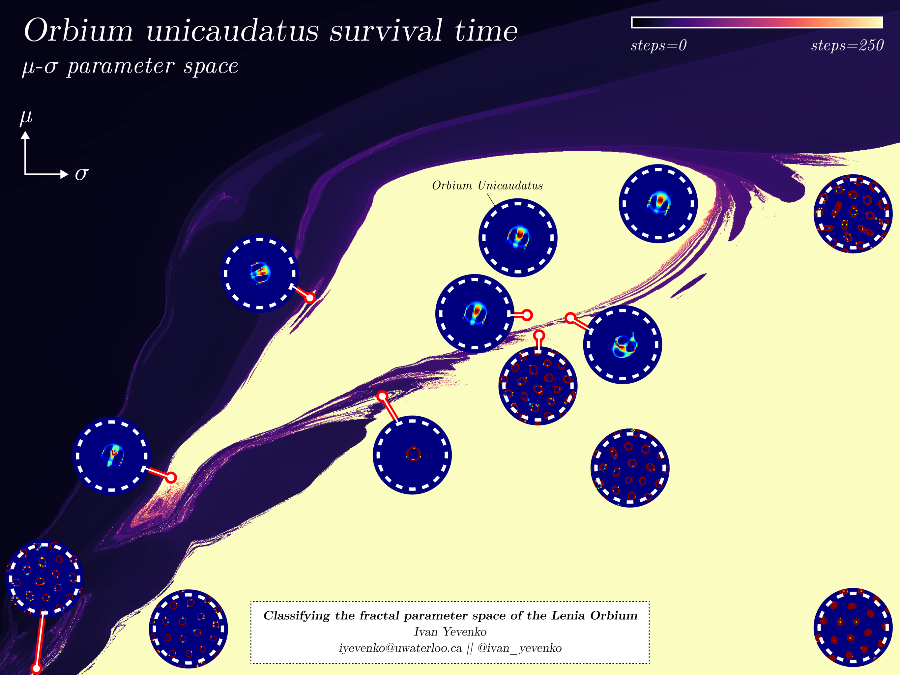
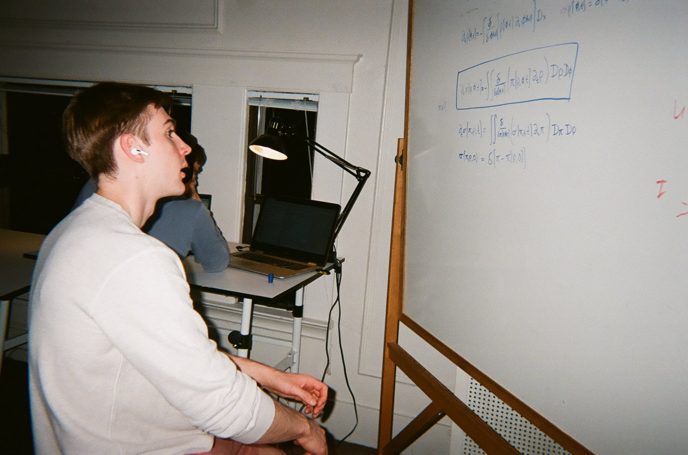

Fractal Physics
from artificial life to quantum mechanics and beyond
An Autobiographical Introduction to Artificial Life and Fractals
I started playing around with an artificial life simulation called Lenia while totally burned out from trying to scale my startup's hacky side project to millions of users. After 2 months of 16 hour days fighting fires to keep the viral growth of our AI image search product from plateauing, things had finally settled down a little and I took some time off to sort out what I was doing and why. I was approaching the devastating realization that my job as cofounder of this startup would be to incrementally improve a google images competitor for the next 3-5 years for a chance at an acquisition that would make me \(\sim\)7 figures by my mid 20s. I was neither qualified nor enthused in the slightest to pursue this path, and the money was simply not worth that level of commitment... what to do?
Certainly the right course of action was to entirely sidestep the crushing weight of this decision—I thought. In an enduring fit of procrastination, I began trying to understand how and why the simple PDE behind Lenia (a continuous generalization of Conway's Game of Life) produced unmistakably life-like behavior. I found that visualizing the space of viable creatures produced an archipelago of beautiful fractal islands, and decided to submit these results to the Artificial Life conference in my first ever solo paper. To my surprise I was invited to give a talk about my discoveries, and no sooner than 3 months later I was lecturing leading ALIFE experts on fractal attractors in continuous cellular automata.

These experts seemed to all get stuck on the fact that a purely continuous system was producing seemingly infinitely jagged boundaries in its behavior space. "This must be an artifact of discretization", they told me. That was odd, because the moment I saw the high resolution image of the fractal in my Jupyter notebook, it was clear that the space was of solutions was fractal at its most fundamental level. Thus, the researchers' disbelief signalled to me that I had a stumbled upon a genuinely novel (or at least totally unexplored) phenomenon.
I would study dynamical systems, fractal attractors, and chaos theory on and off for the next year while wrapping things up at my startup, finishing the last year of my engineering degree at Waterloo, and helping to build an early prototype of bracketbot. This culminated in my second paper, where I demonstrated that the probability distribution over states is evolved by the dynamics in a way that collapses its effective degrees of freedom to only a finite few relevant dimensions. Crucially, one can very efficiently estimate the effective dimensionality of the stationary distribution which contains all infinite time dynamics, and this effective dimension need not be a whole number. For example, one chaotic solution was measured to have a fractal dimension of approximately 8.5. As far as I can tell, I was the first to employ this method of dimension estimation to a truly infinite dimensional system (simulated as a finite-dimensional system of course), and the results were quite stunning. Qualitatively, the solutions exhibited immense spatiotemporal complexity, but quantitively the numbers told me that you needed no more than 9 variables to encode and evolve the state. How could you take advantage of this?
Consider the case of a pure soliton—a pattern that simply translates in a fixed direction over time. Given a start position \((x,y)\) and elapsed time \((\Delta t)\) one could predict the entire state of the system without ever running the full simulation. The process for predicting the state would look like: 1) extract a center of mass and orientation from an image of the state 2) use a fixed velocity to calculate the displacement after \(\Delta t\) time 3) shift the image by that displacement in pixels. Seems relatively trivial, and clearly more efficient than running a full PDE simulation.
None of this works if the solution is fractal dimensional. What does it mean to extract a fractional number of variables from an image? How do you evolve a fractal dimensional state as an ODE in time? How do you map a fractal dimensional state back to an image? Entirely unclear. Exciting!
Fractal Physics
Fractal physics begins with the question: "How do you model the long-time dynamics of effectively fractal dimensional solutions to high/infinite dimensional differential equations?". This differs from classical physics only by the word "fractal", which just means the dimension need not be a whole number. The distinction is identical to the one we observed in Lenia: some observed behaviors are whole-dimensional and reduce to simple rigid body kinematics with a clear mapping from full state to low-dimensional representation, and some are fractal dimensional and we have no idea how to model that. The key insight is that the same underlying physical system can converge to both of these solution modes, so there should exist generalized physical equations that represent both possibilities.
Deep into unemployment and living off of what savings I had from the measly salary I paid myself during the startup days, I set off to solve this problem in quite... unusual fashion. With the financial support of Hummingbird's Magnificent Grants, I started a hacker house in San Francisco (the fourth of these I had inhabited in a 2 year span) called calculus house and recruited 6 other "high agency" researchers to live together and grind on totally unrelated but equally technical problems. We ended up taking up a floor in the 30 person mansion now known as the inventors' residency, and I quickly realized this was an undesirable site for a hardcore research lab. Aspiring to turn this hacker house into a legitimate institution, I sought advice from people experienced with running alternative research orgs. Apparently, the modern formula for funding scientific research is some combination of, "raise more money", "go and drop out of MIT", and my personal favorite: "you just gotta convince the rationalists it will solve AI safety".

While this advice was clearly effective for the purpose of starting something big, I was totally unimpressed with the work that these big labs with upwards of $100M in funding were putting out. Evidently, going bigger could increase the certainty of progress on incredibly incremental tasks. While incremental progress is absolutely necessary, we live in a world where truly novel scientific breakthroughs are a fantasy reserved for biopics and nostalgic blog posts glazing Bell Labs. No one believes in low hanging fruit so no one is putting any effort into finding it. The truth is, there is no amount of fundraising or scaling that can begin a revolutionary transformation in science. It has to start with revolutionary science.
Feeling particularly rebellious and motivated to make something impressive of my research, I left SF and returned to Toronto for a year to focus entirely on solving the problem of fractal physics, which I had concurrently made substantial progress on at calculus house. I had learned that fractal dimension was terribly nonlocal, and naïvely attempting to make it local required an extra direction corresponding to scale that did not commute nicely with time evolution. Resolving this tension has been the focus of my research for the past year now, and to my surprise and delight, it appears to lead directly to both general relativity and quantum mechanics.
Defining Fractal Dimension
Let's begin with the definition of fractal dimension. There are many definitions which I explain with much more technical rigor here, but the most physically relevant one is information dimension, which is defined for a probability measure \(\mu\) as follows: \[ \mathcal D_I = -\lim_{\varepsilon \to 0^+} \frac{H_\varepsilon[\mu]}{\log \varepsilon} \] where \(H_\varepsilon\) is an \(\varepsilon\)-coarse-grained block entropy of \(\mu\). Intuitively, information dimension answers the question "how many bits are lost on average for each doubling of resolution"? For example, if your probability measure is evenly distributed on a large 2D plane in 3D, then the typical probability mass in any one block will be \(\sim \varepsilon^2\). Plugging into the formula we get \(-\lim_{\varepsilon \to 0^+}\frac{-2 \log \varepsilon}{\log \varepsilon} = 2\). A non-whole dimension then just means that probability scales according to some power law with a fractional power. It is purely statistical in the sense that there is no need to think about 2.5 dimensional vector bases or anything like that; it's just a local probability scaling law.
A super important property of fractal dimensions in general is that you can choose almost any coarse-graining method you want and still get the same dimension since it is an asymptotic scaling law, and the "shape" of your coarse graining procedure will always look like a constant that gets annihilated by the rapidly growing denominator (again, see this doc). This is the property we can take advantage of to redefine information dimension with a purely continuous coarse-graining procedure—namely gaussian smoothing: \[ \mathcal D_I = n-\lim_{\sigma \to 0^+} \frac{H_0[\mu * \nu_\sigma]}{\log \sigma}, \quad \nu_\sigma = \mathcal N(0,\sigma^2 I) \] Here, rather than using something like an \(\varepsilon\)-resolution grid, we convolve the measure with an isotropic gaussian and treat standard deviation as the coarse-graining parameter, and use differential entropy \(H_0\) which is defined as an integral as opposed to a sum. We also pick up a correction term which is just the ambient dimension \(n\) because now we are coarse-graining the measure while keeping the background volume fixed, rather than coarse-graining the volume while keeping the measure fixed. We are now counting how many dimensions become "thickened" upon coarse-graining, not how many dimensions are already thick.
We are already in very esoteric territory! As far as I can tell, the only paper to really explore the consequences of defining a dimension by gaussian smoothing the measure like this is "On Classical Analogues of Free Entropy Dimension" by Giuonnet and Shlyakhtenko. They go on to show that information dimension can be written as a scale-averaged Fisher information integral, which is absolutely central to the Lorentzian metric construction I employ later. We start by observing that the measure \(\mu * \nu_\sigma\) is smooth for any \(\sigma > 0\), even when \(\mu\) is singular (this is exactly the case with all fractal-dimensional measures). We can write the probability density for \(\mu * \nu_\sigma\) as follows: \[ \rho(x,\sigma) = \frac{1}{(\sqrt{2\pi} \sigma)^n}\int_{\mathbb R^n} \exp\left(-\frac{|x-y|^2}{2\sigma^2}\right)\, d \mu(y) \] Two very important identities follow from this. First, \(\rho(x,\sigma)\) satisfies a heat equation in the variance \(\sigma^2\): \[ \begin{align*} \partial_\sigma \rho(x,\sigma) &= \sigma \Delta \rho(x,\sigma)\\ \partial_{\sigma^2} \rho(x,\sigma) &= \frac12\Delta \rho(x,\sigma) \end{align*} \] Second, assuming \(\rho\) vanishes at the boundary, the derivative of entropy is fisher information which gives the following relation: \[ H_0[\mu * \nu_\sigma] = H_0[\mu * \nu_1] + \int_1^\sigma s\underbrace{\int_{\mathbb R^n} |\nabla \log \rho(x,s)|^2 \rho(x,s)\, d^nx\,}_{\text{Fisher Information}\,\, \mathcal J[\mu_s]} ds \] Since the first term just a constant w.r.t. \(\sigma\), the information dimension becomes: \[ \mathcal D_I = n - \lim_{\sigma \to 0^+} \frac{1}{\log \sigma}\int_1^\sigma s\int_{\mathbb R^n} |\nabla \log \rho(x,s)|^2 \rho(x,s)\, d^nx\, ds \] Which can be more cleanly be written as an average in the log-scale coordinate \(\ell = - \log s\): \[ \mathcal D_I = n - \lim_{L \to \infty} \frac{1}{L}\int_0^L \int_{\mathbb R^n} e^{-2\ell}\left|\nabla \log \rho\left(x,e^{-l}\right)\right|^2 \rho\left(x,e^{-l}\right)\, d^nx\, d\ell \] As we'll see later, the \(e^{-2\ell}\) factor inside this integral comes from the fact that \(e^{-2\ell}|\cdot|^2\) is really the action of the pushforward metric under the flow that generates the heat equation.
Fractal Dimension in Dynamical Systems
In the previous section, we wrote information dimension as an integral over a scale+space manifold, but in the classical dynamical systems literature fractal dimension is defined only w.r.t. a probability measure on space+time. Our goal is to motivate a definition of fractal dimension that can be written entirely in the language of differential geometry over a space+scale+time manifold and we will systematically remove obstructions until we achieve this goal.
What does information dimension mean in a dynamical system?